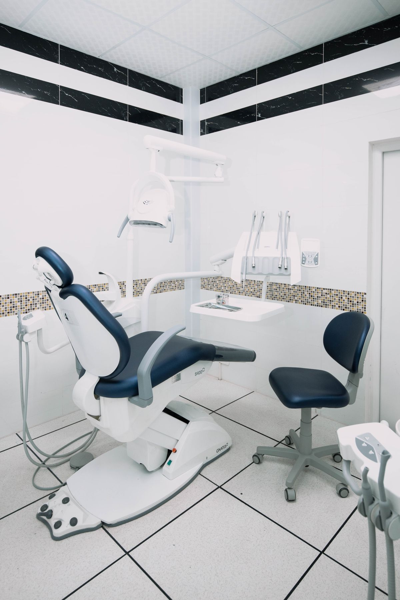
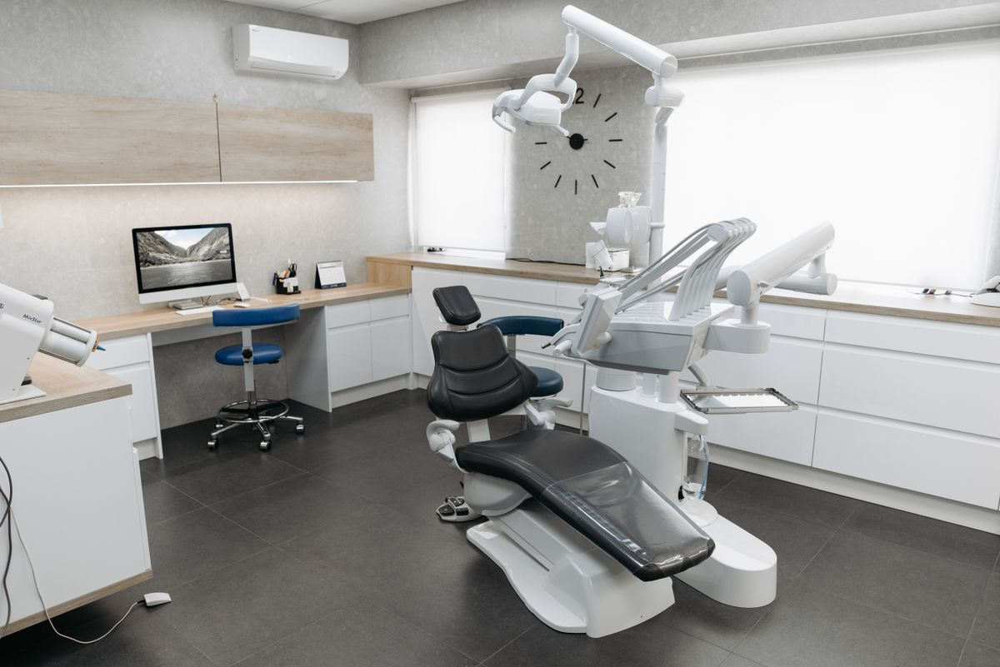

Una sonrisa que merece encontrarse fácil: propuesta de sitio para Central de Sonrisas, en Iztapalapa, Ciudad de México
Esta maqueta muestra cómo luciría un sitio propio para Central de Sonrisas, con agenda de citas en línea y recordatorios automáticos por WhatsApp, hoy resueltos solo a través de Facebook y un perfil externo de reservas.

Sobre la clínica
Central de Sonrisas
Central de Sonrisas es una clínica dental ubicada en Santa María Aztahuacan, Iztapalapa, que atiende tratamientos de ortodoncia e implantes dentales.
-
Santa María Aztahuacan, Iztapalapa, Ciudad de México
Ver ubicación en el mapa - 55 1641 9475
- centraldesonrisas@gmail.com
Por qué digitalizarse
Lo que esta propuesta le permitiría ofrecer
Un sitio propio acerca a la clínica a más pacientes y facilita el primer contacto antes de agendar una cita.
Presencia digital propia
Hoy la clínica se ubica solo mediante Facebook y un perfil externo de reservas en AgendaPro. Un sitio propio concentra su información bajo su control, sin depender por completo de plataformas de terceros.
Agenda de citas en línea
Actualmente no hay una agenda de citas en línea propia, solo un perfil informativo externo. Un sitio con agenda integrada permitiría recibir solicitudes de cita en cualquier momento, no solo por llamada o mensaje directo.
Recordatorios automáticos por WhatsApp
Un sitio con automatización de agenda puede enviar recordatorios de cita y dar seguimiento a tratamientos como la ortodoncia directamente por WhatsApp, reduciendo las inasistencias.
Una identidad digital propia y clara
En la zona existen otras clínicas dentales con nombres similares. Un sitio propio ayuda a que las personas identifiquen con claridad esta ubicación específica, con su información de contacto verificada.
Servicios
Tratamientos de esta clínica y servicios habituales de una clínica dental
Central de Sonrisas atiende ortodoncia e implantes dentales; el resto describe, de forma general, servicios habituales del sector.
Ortodoncia
Tratamiento para alinear la posición de los dientes, uno de los servicios que ofrece esta clínica.
Implantes dentales
Colocación de implantes dentales para reemplazar piezas perdidas, disponible en esta clínica.
Atención y agenda por WhatsApp
Solicitud de información y seguimiento de citas por WhatsApp, directamente con la clínica.
Consulta y diagnóstico dental
Valoración general de la salud bucal, un servicio habitual en clínicas dentales.
Limpieza dental
Limpieza y profilaxis dental, un servicio habitual en clínicas dentales.

Esta sección confirma ortodoncia e implantes según el perfil de citas en línea de la clínica; el resto de los tratamientos, alcances y disponibilidad específicos los determina la clínica en cada caso, y describe de forma general servicios habituales de una clínica dental.
Preguntas frecuentes
Dudas comunes sobre esta clínica y sus tratamientos
¿Esta clínica atiende ortodoncia e implantes dentales?
Sí, Central de Sonrisas atiende tratamientos de ortodoncia e implantes dentales.
¿Qué otros servicios ofrece una clínica dental como esta?
Por lo general, una clínica dental atiende también consulta y diagnóstico, limpieza dental y otros tratamientos habituales del cuidado bucal. Los alcances específicos conviene confirmarlos directamente con la clínica.
¿Puedo agendar una cita en línea?
Esta propuesta incluye una agenda de citas en línea propia. Mientras tanto, puede solicitar información y agendar directamente por WhatsApp o llamada.
¿Cómo contacto a Central de Sonrisas?
Puede escribir por WhatsApp o llamar al 55 1641 9475, o enviar un correo a centraldesonrisas@gmail.com.
¿Dónde se ubica esta clínica?
En Santa María Aztahuacan, Iztapalapa, Ciudad de México.
¿Damos el siguiente paso?
Escríbanos por WhatsApp o llame directamente para conocer más sobre esta propuesta.